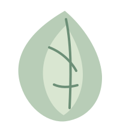
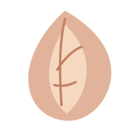
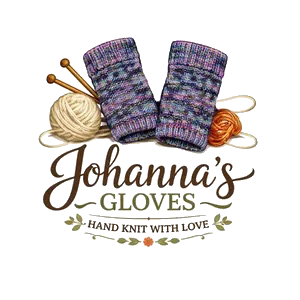
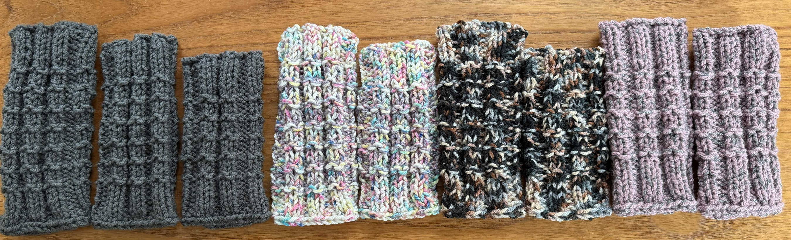
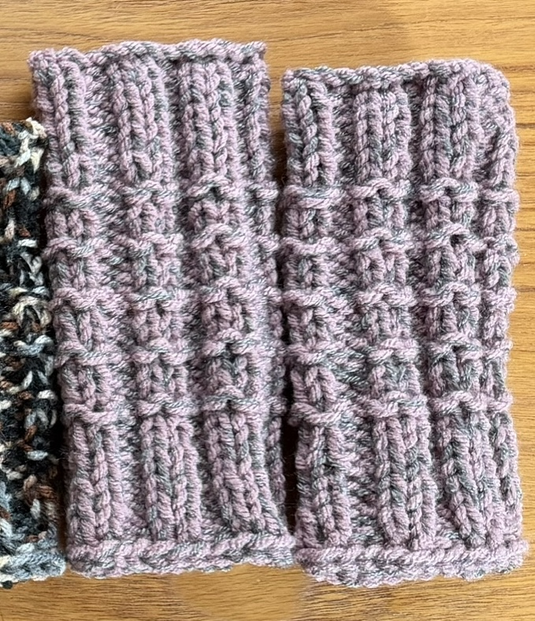

Warm hands
Soft fingerless gloves made for everyday comfort, from errands to typing and crafting.



Handmade wrist warmers
Handmade in cozy acrylic yarn, these fingerless mittens keep hands warm while still letting you drive, type, text, and craft. Available in a large selection of seasonal colors and sizes.

Soft fingerless gloves made for everyday comfort, from errands to typing and crafting.
Keep your hands warm while still letting you use your fingers freely all day long.
Machine washable acrylic yarn with a cozy feel and a range of seasonal colors.

Made for everyday softness
Johanna Gloves crafts fingerless mittens that keep hands warm without getting in the way. They are ideal for everyday use, from chilly walks and office work to reading, typing, and staying cozy through the seasons.
Johanna Gloves offers soft seasonal colors, custom options, and a range of sizes. For more colors, close-ups, and available styles, visit the Etsy shop.
See more on EtsyWhere to buy
More photos and updated styles are available in the shop, and every listing is linked there.
Item average
(19 reviews)
Needed these quickly before leaving for a vacation. Shipping was fast and they were exactly what I needed.
Beautifully crafted, will be ordering again!
Amazing quality and fast shipping!
Wonderful product, fast shipping. Hardly any time to wait at all!